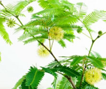

品牌化提升桑果知名度 助力果农致富
发布者：admin 发布日期：2015-9-30

天还蒙蒙亮，果农丁方明就低头钻入桑树丛中。去年这一亩多的桑果园，给他带来了1万多元的收益。对今年的销路问题，老丁丝毫不担心。他说，现在来基地采摘的游客越来越多，一到双休日，路旁都要排起长队。
这几乎成了浙江绍兴市上虞区丁宅乡所有桑果果农的心声。丁宅被誉为“江南蚕桑之乡”，上世纪90年代之前，这里一直种桑养蚕，后因蚕茧产销受冲击，效益大幅下降，才开始大面积栽种果叶两用桑。
刚开始种植时，丁宅也举步维艰。由于桑果上市采摘时间较短，每年桑果大产，可果农几度寻求市场无果，只能低价贱卖给宁波的加工厂，有几年的售价甚至连成本都够不上，只能烂在地里。
面对“增产不增收”的尴尬困境，丁宅渴望找到出路。“四季仙果之旅”，让众多果农看到了曙光。2010年，上虞提出这一品牌，计划以农副产品为核心，依托农家乐和旅游景区，发展以鲜果采摘、农家体验、山水鉴赏为内涵的休闲旅游。
简而言之，就是由政府搭台，做好基础设施的同时，将节会、媒体、企业、市场等元素融合，利用专业渠道予以广泛宣传，打响品牌后，再联合各个企业和基地，招徕外地游客。
丁宅的桑果名列其中。原先果农人手只有几亩果园，单打独斗地闯市场、打品牌，既无资金实力，更无经验渠道，现在由政府整体推进，几年下来事半功倍，丁宅桑果的知名度急剧上升。果农们再也不用挑担上街卖果，游客自己上门采摘，价格还翻好几倍。
相关信息